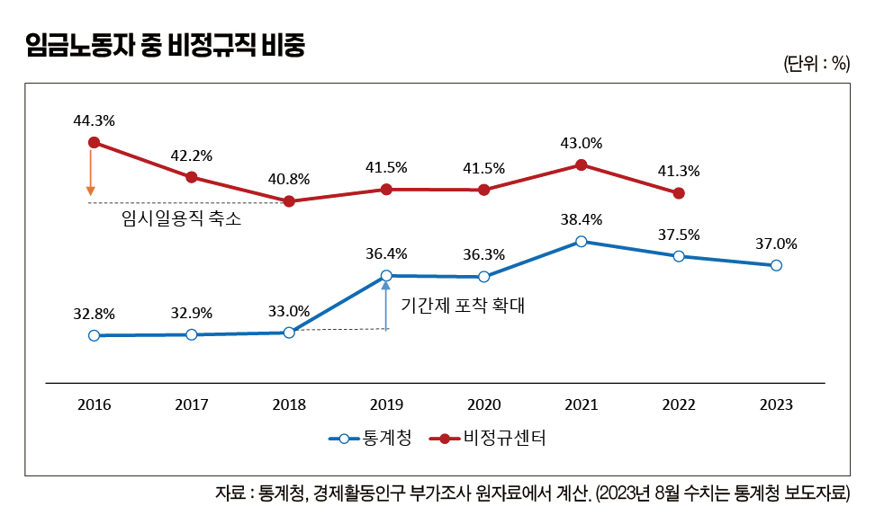
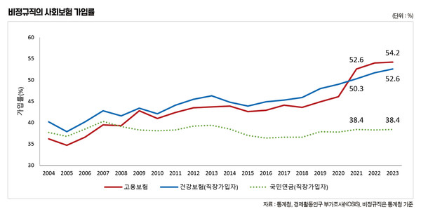
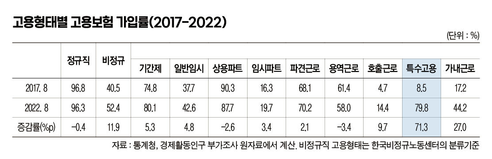

박영삼의 통계로 보는 노동
고용허가제 취업자 25만명, 지난해 대비 5만명 순증
특수고용직 가입률 2022년 80% 수준 접근 … 전 국민 고용보험 로드맵 효과
통계청이 24일 발표한 경제활동인구 근로형태별 부가조사에서 지난 8월 기준 우리나라의 비정규 노동자 비중은 37.0%로 지난해보다 0.5%포인트 감소한 것으로 나타났다. 통계청의 원자료는 11월말 공개 예정으로 노동계의 비정규직 분석 결과는 아직 시간을 더 기다려봐야 한다.
하지만 통계청과 노동계의 비정규직 판단 기준은 임시일용직을 비정규직으로 볼 것인가 여부와 기간제의 범위에서 주로 차이가 발생하는데, 2007년 비정규직 관련법 시행 이후 2018년까지는 임시일용직 비중이 감소하면서 노동계 추산 비정규직 비율이 상대적으로 감소해 왔다. 2019년 이후 통계청 조사방법 변경으로 기간제와 한시적근로의 포착 범위가 확대되면서 정부와 노동계와의 비정규직 규모와 비중에 관한 간극이 크게 축소됐다. 이에 따라 2019년 이후로는 정부와 노동계 간에 4~5%포인트 간극을 유지하는 선에서 변화의 방향이 같아졌기 때문에 향후 노동계 집계에서도 비정규직 비율이 약간 감소하는 것으로 나올 것으로 예상할 수 있다.

비정규직 고용보험 가입률, 건강보험도 추월
그런데 최근 2~3년 사이에 통계청의 부가조사에서 눈에 띄는 변화가 나타나고 있었는데 많은 사람들이 크게 주목하지 않은 사실이 있다. 그것은 비정규직의 사회보험 가입률, 특히 고용보험 가입률 증가다.
2023년 8월 통계청 정의에 따른 비정규직의 사회보험 가입률은 고용보험이 54.2%로 가장 높고 건강보험(직장가입)이 52.6%, 국민연금(직장가입) 38.4% 순이다. 비정규직 통계를 집계하기 시작한 2004년 당시에 가장 낮았던 고용보험 가입률은 2008년 이후 60세 이상 고령노동자 비중이 증가하면서 정체하기 시작한 국민연금 가입률을 추월했고 2021년에는 건강보험 가입률까지 넘어서게 됐다.
이제 절반을 약간 넘은 수준이지만 2010년 이후 40% 초반에 머물던 고용보험 가입률은 2018년 43.6%에서 2019년 44.9%, 2020년 46.1%로 상승하다가 2021년에는 52.6%로 훌쩍 뛰었다. 2022년에도 54.0%로 1.4%포인트 증가했고, 2023에는 0.2%포인트 더 상승해 54.2%를 기록했다.

비정규직의 고용보험 가입률 증가는 무엇보다 코로나 사태를 거치며 정부가 2020년 12월 ’전 국민 고용보험 로드맵’을 발표하고 예술인과 특수고용직, 인적용역 노무제공자로 고용보험 적용을 단계적으로 확대한 영향이 주효했던 것으로 보인다.
특수고용-비전형근로에서 증가 이끌어 … 전 국민 고용보험 효과 확인
통계청의 2023년 원자료가 공개되지 않은 상태이기 때문에 고용형태별 변화는 2022년 8월까지의 자료로 확인해볼 수 있다. 한국비정규노동센터의 고용형태 분류기준을 적용해 2017~2022년 기간 고용형태별 고용보험 가입자 수와 가입률 증감치를 보면 가장 극적인 변화는 특수고용 노동자들에서 나타난다. 2017년 49만5천명 중 4만2천명만 고용보험에 가입해 8.5%의 가입률을 보였던 특수고용 노동자는 2022년이 되며 56만명 중 44만7천명이 가입해 가입자가 40만5천명 증가하고 가입률은 8.5%에서 79.8%로 무려 71.3%포인트 증가한 것으로 집계됐다. 통계청 자료에서도 특수고용이 포함된 비전형근로 고용보험 가입률이 2017년 30%에서 2023년 50.8%로 증가한 것으로 나온다.

물론 특수고용 노동자들이 고용보험에 가입했다고 해서 자동으로 소득상실이 발생했을 때 실업급여를 받을 수 있다는 의미는 아니다. 실제로 많은 난관이 예상된다. 또한 비정규직의 고용보험 가입률은 여전히 절반을 약간 넘는 수준에 불과하기도 하다.
하지만 정부가 의지를 갖고 제도를 개편하고 국세청의 소득신고 주기 단축과 같은 확실한 수단을 갖추기만 한다면 불안정 노동자들의 사회안전망 사각지대를 확실히 줄일 수 있다는 것을 수치로 확인한 것은 상당한 의미가 있는 일이다.

고려대 노동문제연구소 노동데이터센터장 (youngsampk@gmail.com)